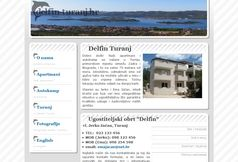
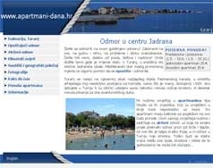

web design
All the design and coding of this web-site was done by myself. So, if someone likes any part (menu script, photo gallery script and database model, design elements, etc.) of this web-site and wants to use it, just contact me by e-mail. If you do, please include some basic informations about how and where would you like to use these stuff. In case that you need help, I can even explain how scripts work, or help you implement them.
Site was made using DHTML technology (combining HTML/XHTML, CSS and JavaScript), so you won't need any browser plug-ins. I tried to use common code elements, so site should work with any browser new (made after 2000) with JavaScript enabled. I use jQuery library for advanced JavaScript effects.
my portfolio
 Apartments Eugen Pedisić are situated by the seashore near the center of Turanj. This is my first Wordpress site, and I have to admit that CMS works pretty for small sites athough it requires changing some developer habbits. Site was built during February of 2012.
Apartments Eugen Pedisić are situated by the seashore near the center of Turanj. This is my first Wordpress site, and I have to admit that CMS works pretty for small sites athough it requires changing some developer habbits. Site was built during February of 2012.
 Delfin Turanj is advertizing apartments and autocamp in Turanj, in a quiet place near Turanj center and main beach. Owners are Jerko and Ema Jačan, young couple already experienced in lodging services. Site was built in August 2010. on www.delfin-turanj.hr but it is currently offline.
 Dalmacija ribolov d.o.o. (Dalmatia fishing) catch and sale of small pelagic fish, especially pilchard and anchovies. Catch is mainly used as tuna food in the Jadran tuna farm, and the rest is marketed as fresh fish or raw materials for processing. It was built in June 2010. and redesigned to match visual identity of some other ownership related firms in December 2010. It is available on www.dalmacija-ribolov.hr.
Dalmacija ribolov d.o.o. (Dalmatia fishing) catch and sale of small pelagic fish, especially pilchard and anchovies. Catch is mainly used as tuna food in the Jadran tuna farm, and the rest is marketed as fresh fish or raw materials for processing. It was built in June 2010. and redesigned to match visual identity of some other ownership related firms in December 2010. It is available on www.dalmacija-ribolov.hr.
 Jadran tuna is one of the worlds most successful bluefin tuna farms. They fish for small bluefin tuna, farm them and then export them (mostly to Japan, where it's meat is highly appreciated). You can find information about bluefin tuna species, farming process and fishing fleet on www.jadran-tuna.hr. Site was built on October 2009.
Jadran tuna is one of the worlds most successful bluefin tuna farms. They fish for small bluefin tuna, farm them and then export them (mostly to Japan, where it's meat is highly appreciated). You can find information about bluefin tuna species, farming process and fishing fleet on www.jadran-tuna.hr. Site was built on October 2009.
 My second commercial project was much like the first one: apartments on Adriatic coast that needed Internet advertising, because old school agency and other conventional ads lost their importance. These apartments are situated in Pakoštane, and belong to young family Juričin. Texts are written in English, German, Czech and Croatian, and you can see it on www.apartmani- punta.hr.
My second commercial project was much like the first one: apartments on Adriatic coast that needed Internet advertising, because old school agency and other conventional ads lost their importance. These apartments are situated in Pakoštane, and belong to young family Juričin. Texts are written in English, German, Czech and Croatian, and you can see it on www.apartmani- punta.hr.
I did my first commercial web design project for Pedisić family in Turanj, They wanted to advertise their apartments on Internet after a long period of conventional off-line advertising. Site has seen the day light at march 2006. and it was a success: number of reservations started to rise and the site had returned investment in one month. You can see the site in Croatian, English and Italian on www.apartmani-dana.hr.
 My first web project was a web site for local water polo club. I did it voluntarily as homage to club where i learned
to play water polo and I'm trying to help my club in this (and some other) way. It is written in Croatian and English.
My first web project was a web site for local water polo club. I did it voluntarily as homage to club where i learned
to play water polo and I'm trying to help my club in this (and some other) way. It is written in Croatian and English.
Site is active since 2003. on
www.vkcroatiaturanj.hr.
 In summer 2007. came the new site design, mostly because of technology change (CRT to LCD) and average sreen
resolution growth. Rows of text became to wide and hard to follow, and what was once a great benefit became a
great disability. Relative widths are definitely out these days.
In summer 2007. came the new site design, mostly because of technology change (CRT to LCD) and average sreen
resolution growth. Rows of text became to wide and hard to follow, and what was once a great benefit became a
great disability. Relative widths are definitely out these days.
Before the Summer 2012. I have put the Wordpress backend to the web site without changing the design, and it works great for this project.
mastering your web
In case you like the design of this web-site, you may be interested in looking at my portfolio. If you want to hire me for making your own web-site or web-site for yourcompany, I can offer you fairly fast design that will be suitable for your needs.
Also, if you don't have much experience with Internet, I can help you register your domain and find web hosting company for your site. And if you already have a web-site, but you need someone to redesign it i can do that too. Of course, with consent with original designer. In case that you are interested in some of this, contact me on .
technologies
| coding / programming .:. | HTML (DHTML) |
.:. | CSS |
| .:. | Javascript |
| .:. | SVG |
| .:. | XML |
scripting / animation .:. | jQuery |
design / illustration / graphic .:. | Photoshop |
.:. | Inkscape |